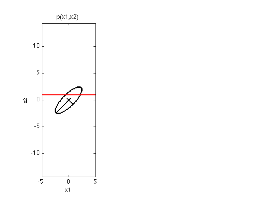
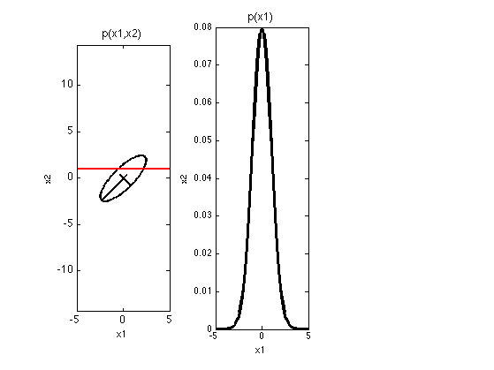

Conditioning a 2D Gaussian
Take a horizontal slice thru a 2d Gaussian and plot the resulting conditional
Contents
% This file is from pmtk3.googlecode.com fs = 12; mu = [0 0]'; rho = 0.8; S = [1 rho; rho 1]; figure; subplot(1,3,1); gaussPlot2d(mu, S, 'color', 'k'); axis equal hold on; [U,D] = eig(S); sf= -2.5; line([mu(1) mu(1)+sf*sqrt(D(1,1))*U(1,1)],[mu(2) mu(2)+sf*sqrt(D(1,1))*U(2,1)],... 'color','k','linewidth',2) line([mu(1) mu(1)+sf*sqrt(D(2,2))*U(1,2)],[mu(2) mu(2)+sf*sqrt(D(2,2))*U(2,2)],... 'color','k','linewidth',2) x2 = 1; line([-5 5], [x2 x2], 'color', 'r', 'linewidth', 2); xlabel('x1'); ylabel('x2'); title('p(x1,x2)', 'fontsize', fs) set(gca, 'fontsize', fs) %printPmtkFigure('gaussCondJoint');
unconditional marginal
%figure; subplot(1,3,2); marg.mu = mu(1); marg.Sigma = S(1, 1); xs = -5:0.2:5; ps = gaussProb(xs(:), marg.mu, marg.Sigma); ps = normalize(ps); plot(xs, 0+ps, 'k-', 'linewidth',3 ); xlabel('x1'); ylabel('x2'); %axis equal title('p(x1)', 'fontsize', fs) %set(gca, 'fontsize', fs) printPmtkFigure('gaussCondMarg');
Conditional
%figure; subplot(1,3,3) model = struct('mu', mu, 'Sigma', S); modelHgivenV = gaussCondition(model, 2, x2); [muHgivenV, SigmaHgivenV] = structvals(modelHgivenV, 'mu', 'Sigma'); ps = gaussProb(xs(:), muHgivenV, SigmaHgivenV); ps = 50*normalize(ps); plot(xs, ps, 'k-', 'linewidth',3 ); xlabel('x1'); ylabel('x2'); title('p(x1|x2=1)', 'fontsize', fs) %axis equal %set(gca, 'fontsize', fs) %set(gca, 'xlim', [-5 5]) %set(gca, 'xticklabel', -5:5); %printPmtkFigure('gaussCondCond'); printPmtkFigure('gaussCondSubplot'); %{ %% sideways plot figure; model = struct('mu', mu, 'Sigma', S); modelHgivenV = gaussCondition(model, 2, x2); [muHgivenV, SigmaHgivenV] = structvals(modelHgivenV, 'mu', 'Sigma'); ps = gaussProb(xs(:), muHgivenV, SigmaHgivenV); ps = 100*normalize(ps); hold on; ndx = linspace(-3, 3, numel(ps)); plot(ps, ndx, 'k-', 'linewidth', 3); %for i=1:numel(ps) % plot(ps(i), i, '-', 'linewidth',3 ); %end xlabel('x1'); ylabel('x2'); printPmtkFigure('gaussCondCond'); %}